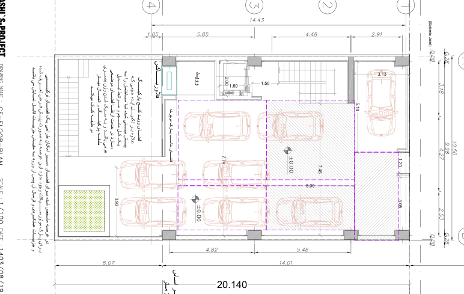

نقشه · طرح ۱۴۰۳
پلان همکف — پارکینگ (بازنگری نهایی)
همکف (±۰٫۰۰)
بازترسیم شماتیک از روی شیت، تقریبی؛ ترازها فرضیاند.
بازترسیم شماتیک از روی شیت، تقریبی؛ ترازها فرضیاند.

{kind=link}
برداشت
اینجا خودروها هندسهٔ طبقه را تعیین میکنند: هشت جای پارک، سهتایش هاشورخورده، یعنی فقط با جابهجایی بقیه آزاد میشود. با این همه، کنار آسانسور کنجی خالی مانده که معمار آن را ووید مینامد و در طبقات بالا ایوان میشود؛ در حیاط نواری برای دوچرخه و یک جعبهٔ گل. ضوابط پارکینگ تماموکمال جواب داده شده، و باز هم گوشهای خالی مانده تا تودهٔ ساختمان سبک به نظر برسد.
با شاخصها میخواند
- شاخص ۸: باغچهای روی گودال و جعبهٔ گل در گوشهٔ حیاط؛ صاحب زمین پرسید فلسفهٔ این ابعاد چیست.
- شاخص ۱۹: آسانسور در باکس مرکزی، کنار پله، با راهی که تا زیرزمین میرود.
چه چیزی را کم دارد
- مسیر پیاده جدا از خودرو نیست؛ رسیدن به پله از لای ماشینها میگذرد.
- درختی نیست.
- راهپله پنجره ندارد؛ شاخص هجدهم پلهای با پنجره و جای نشستن میخواست.
- جای موتورسیکلت فقط در یک یادداشت وعده داده شده.
چه چیزی اضافه میکند
- نوار پارک دوچرخه در حیاط، افزودهشده پس از مشاهدات صاحب زمین.
- ووید کنار آسانسور: خالیای که به گفتهٔ معمار وزن بصری پیلوت را سبک میکند و در طبقات بالا ایوان میشود.
- هشت جای پارک روی زمینی که پنجتای آن استاندارد است: طرح برای روز شلوغ هم فکر کرده.
چه پرسشی باز میماند
- درخت: باغچهٔ مربع روی گودال چه چیزی در خود میکارد؟
- ترکیب واحدها: هشت خودرو برای چهار واحد؛ پارکینگ چقدر از خانه را تعیین میکند؟
چطور میشد بهتر باشد
- میشد گذری پیاده در کنج شمالغربی باز کرد تا آدمها و خودروها راه جدا داشته باشند.
- میشد پله به دیوار شرقی برود تا نور صبح بگیرد؛ معمار پلهٔ غربی را پلهٔ اجباری میدانست.
- میشد بخشی از سقف حیاط مشبک فلزی باشد که نور بدهد و بشود روی آن راه رفت.
جزئیات روی شیت
- هشت خودرو روی برگه: پنج تا در دو زون خطچین بنفش ۷٫۷۴×۵٫۰۰ و ۷٫۴۵×۵٫۱۴، یکی در دهانهٔ ۳٫۱۳ کنار خیابان، دو تا در حیاط.
- هاشور مورب روی سه جای پارک شرقی و گوشهٔ ۱٫۲۰×۳٫۰۵: جایهای غیرمتعارف که تنها با جابهجایی خودروهای دیگر آزاد میشوند.
- برچسب «ووید» کنار آسانسور ۲٫۰۰×۱٫۶۰ در گوشهٔ جنوبغربی: همان خالیای که در طبقات بالا ایوان میشود.
- نوار «فضای مناسب پارک دوچرخه» در لبهٔ غربی حیاط و «فلاور باکس» در گوشهٔ آن.
- باغچهٔ مربع نقطهچین در جنوبشرقی حیاط، بالای گودال باغچهٔ زیرزمین؛ پلهٔ پهن گودال در ضلع غربی.
- پلهٔ اصلی ۱٫۵۰ در میانهٔ ضلع غربی و دو نشانهٔ ±۰٫۰۰ روی کف پارکینگ.
- یادداشت فارسی درون حیاط دربارهٔ خالیِ گوشهٔ پارکینگ و یادداشت پایین برگه دربارهٔ پارک موتورسیکلت در عرصهٔ سبز.
- همان دو یادداشت ضوابط (۶۰ درصد + ۲ متر؛ کنسول ۰٫۶۰) در پایین برگه.
فضاها
پارکینگ (۵ جای متعارف + ۳ غیرمتعارف)، ووید (خالی) کنار آسانسور، پلکان، آسانسور، فضای پارک دوچرخه، فلاور باکس، باغچه روی گودال، حیاط
یادداشت
این برگه آخرین بازنگری پارکینگ (اوایل آذر ۱۴۰۳) است که پس از مشاهدات صاحب زمین — دوچرخه، موتور، ورود پیاده — کشیده شد، ولی کادر عنوان همان شمارهٔ A3_002 و تاریخ ۱۴۰۳/۰۸/۱۹ برگهٔ اولیه را نگه داشته. حل شده: جای دوچرخه در حیاط، هشت جای پارک با هاشور برای موارد غیرمتعارف. حلنشده: مسیر پیادهٔ جدا از خودرو نیست؛ درختی نیست. یادداشتهای معمار در حاشیه میگویند خالیِ گوشهٔ پارکینگ ایدهٔ حجمی ساختمان را کامل میکند و وزن بصری طبقهٔ پارکینگ را سبک میکند، و این که در عرصهٔ سبز میتوان جای موتورسیکلت را هم گنجاند و جزئیاتش در مقیاس بعدی میآید. نام نقشه در کادر: GF-FLOOR-PLAN.